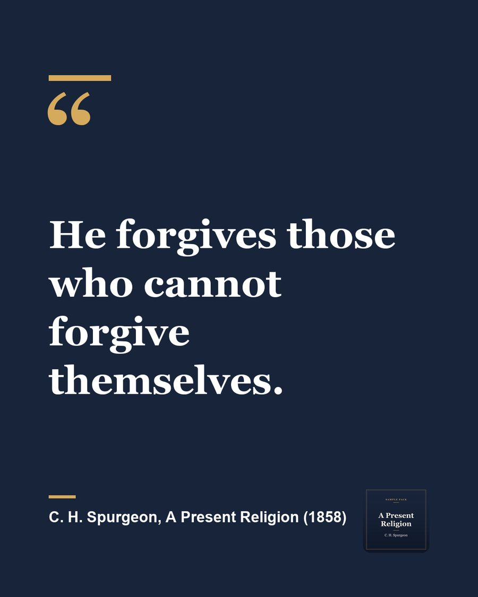

Every pack starts with three clips like this one.
Seek Christ first, and happiness comes after
Suggested caption:
Spurgeon said he never knew a Christian who regretted giving their life to Christ, not in sickness, not in poverty, not even in seasons of doubt. So do not chase happiness on its own. Seek Christ first, and the joy follows. #Faith #SeekFirst
Sample made from a public domain recording of “A Present Religion” by C. H. Spurgeon (1834 to 1892), read by a LibriVox volunteer. Cut and captioned by Already Made. LibriVox and its volunteers do not endorse this studio.
Two more from the same message
Each pack has three clips, chosen so each one stands on its own.
There are no enemies in heaven to forgive
Preview. The full clip comes with your pack.
You are as much God's child right now
Preview. The full clip comes with your pack.
Summary
Preaching on 1 John 3:2, “Beloved, now are we the sons of God,” C. H. Spurgeon puts his weight on one word: now. People keep faith at a distance, the way they keep war and death at a distance, hoping to be saved at last. But the Bible speaks of its blessings in the present tense. A believer is already forgiven, already justified, already a child of God, and will be no more a child of God in heaven than today. Faith and hope can only be exercised here, and so can its duties: loving enemies, forgiving, giving and visiting the sick, since heaven has no one who needs them. Against the idea that faith is gloomy, he points to believers who found it a light in poverty, sickness and toil, and says he never knew a Christian who regretted it. Seek Christ first, he urges, and happiness will follow.
For small groups
The first three of five discussion questions:
- Spurgeon says people keep faith at a distance and plan to deal with it later. Where are you tempted to say “someday” to God?
- Scripture speaks of forgiveness, peace and adoption in the present tense. Which of these is hardest for you to believe is yours today?
- What changes for you when you know you will be no more God's child in heaven than you are right now?
A quote card

What arrives every Monday
- 3 vertical clips with captions, ready for Reels, Shorts and TikTok
- 3 quote cards for Instagram and Facebook
- A 150 word summary for the bulletin, newsletter or website
- A 5 question discussion guide for small groups
- A caption for every clip, ready to paste
Sunday Pack
$149 a month
Or $1,490 a year. Cancel anytime.
Request yoursHow we get the sermon each week
Audio packs come from your podcast feed, the same audio you already publish. For video packs, you either share a video link with your permission or use an upload link we send you.
Nothing is ever posted by us. The pack lands in your inbox, and you decide what to share and when.